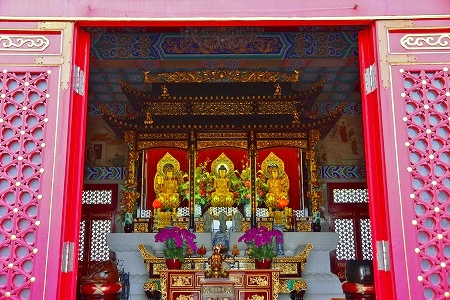

西方寺/荃灣
香港珍寺遊戯お次は地下鉄に乗って新界の荃灣（ツェンワン）という町に向かった。
荃灣というところは九龍半島の市街地の西にあり、中心部に比べると、どことなくうらぶれた雰囲気の町だ。
決して人が少ないとか建物がしょぼいとかそういう感じではないのだが、どことなく道行く人の服装が野暮ったかったり、商店の品揃えが垢抜けなかったり…
要は中国本土の地方都市みたいな感じ。
そんな町の北の山中に西方寺という仏教寺院がある。
郊外の寺だけあって、香港の寺の中でも敷地が広く、連なる堂宇も規模が大きい。
とはいえ、いかんせん山腹にあるので堂宇がくっついて建っているので圧縮感が強い。
この寺が出来たのは１９７０年。
香港ではすでに高層ビルが立ち並び、人類が未だ遭遇したことのない高密度な都市が出来上がりつつある時期だ。
あの九龍城砦やタイガーバームガーデンが現役バリバリな頃で、香港仔湾には水上住居がびっしりと並び、ジャンク船やサンパンが行きかう。
ある意味香港が一番チンチンだった頃ともいえよう。
そんな時期の香港だけに郊外とはいえ傾斜地にしかお寺が建てられなかったのだろう。
本堂である大雄寶殿も二階建ての二階部分にある。
一階は五観堂。
脇から見るとまるで城壁のようだ。

広目天。
日本では筆と巻物を持っているが、中華スタイルでは蛇と玉。
まるで蛇に仁丹を飲ませようとしているみたい。
かように同じ仏像でも日本と他国ではずいぶんスタイルが違うことが往々にしてある。
この広目天にしても中華圏や韓国で見たものはほぼこの蛇に玉スタイルだったはず。
逆に言えば何で日本に入ってきたときには筆と巻物になっちゃったんだろう。
学者じゃないから詳しいことはわからないが、いや判らないからこそ思い込みで決め付けちゃうが、日本に入ってきたときに日本の仏教関係者が「チョット～これ蛇に仁丹飲ませてるっぽくない？」「なくなくない？「「なくなくなくなくない？」（ｂｙスチャダラパー）的な判断が働いような気がするんですけど…。
まあ、要は日本の仏像だけ見て仏教語っても所詮それは辺境の地でアレンジされたローカル宗教だかんね、ということを言うつもりだったんですけど…。
で、大雄寶殿裏側。伝統的な宮廷建築というのかな。こういうの。
内部はこんな。

三尊像が安置されるのもチャイニーズスタイルの王道中の王道。
脇を見ると山の斜面に西方寺と卍マークの植え込みが。
ブーゲンビリアが見事に咲き誇っていた。
空港への航路なのだろう。時折上空を旅客機が飛んでいく。
一番奥には八角九層の萬佛寶塔がそびえている。
内部はこんな感じ。
手前の赤いモノは参拝の際の枕というか座布団的なもの。これも中華圏では良く見かけますね。
上から見てみると結構傾斜角があることが判る。
勿論眼下は高層ビル群。

お、観音サマがいるぞ。
一旦最初の山門まで戻り、右手の傾斜地にある庭園を見に行く。
崖のような傾斜地に仏像が点在して仏教ガーデンを形成しているのだ。
その中でひときわ目を引くのがこのビルマ式寝釈迦様。
奇しくも当サイトの姉妹ページ「日本すきま漫遊記」でも先日ビルマの寝釈迦の事が触れられていたが、ビルマの寝釈迦は、寝ている方向によって意味が違うのだ。
例えば南枕だと説法をしているとか東向きだとリラックスしているとか。
こちらの場合、キッチリ北枕なので入滅シーンと思って間違いなかろう。
そう思って見てみれば成程、背後に入滅を悲しむ弟子の姿が描かれてているではないか。
気になったのは寝釈迦様の腋。
腋毛も金色なんだー。
また、周囲には小さな人工洞窟や崖の上を歩く遊歩道なども設けられており、さして広くないスペースの割には立体的に楽しめるようになっているのが高ポイントであった。
金の腋毛以外これといった見所もないが、たまにはこんなところも良いんではないかい？
陶器の観音像。LEDが埋め込まれてるが夜は光るのかな？
こっから見るとペナンの極楽寺によく似てるなあ。
↑画像左端にチラッと円形の塔が見えるじゃないか。勿論行ってみますとも。
次ラストです